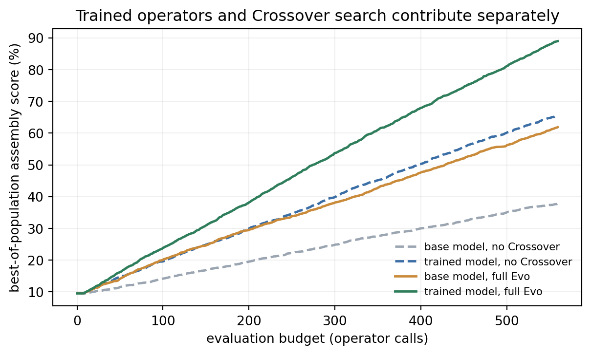
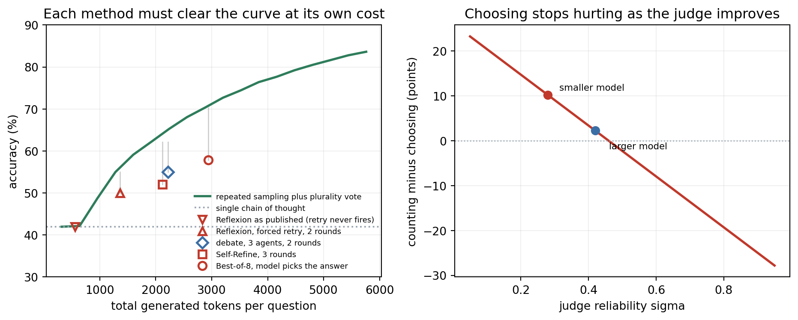
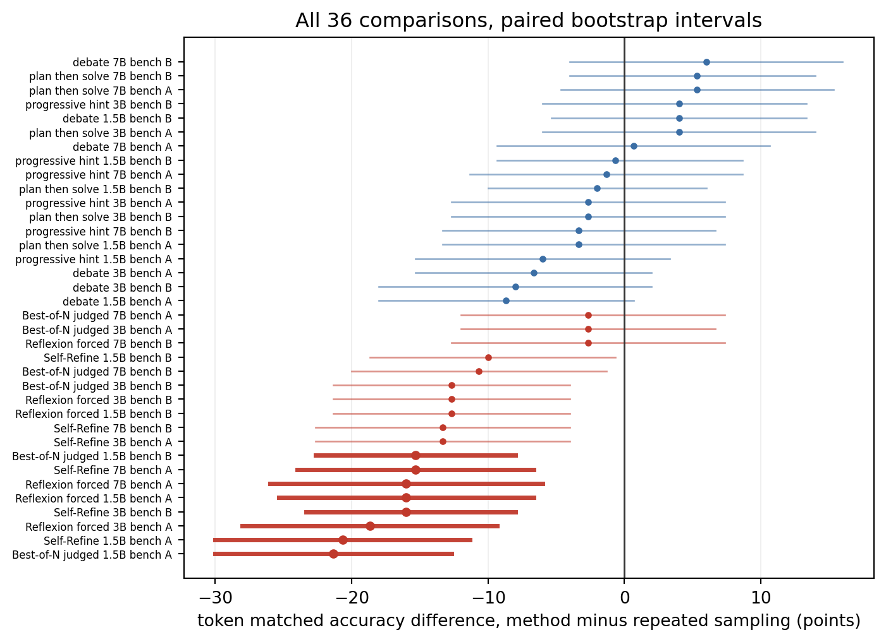

flowchart LR
X["Input x"] --> G["Generate\ny(0)"]
G --> F["Feedback\nc(t)"]
F --> R["Refine\ny(t+1)"]
R --> S{"Stop?"}
S -- "No" --> F
S -- "Yes" --> O["Output y(T)"]
232 Reflection and Self-Improvement in LLM Agents
Human writers revise. Programmers debug. Scientists replicate experiments and update hypotheses. The first attempt at any complex cognitive task is rarely the best one; iterative refinement against feedback is how high-quality work emerges. Large language models, however, are traditionally used in a single forward pass: one prompt, one response, done. This chapter examines a cluster of techniques that break that assumption by building feedback loops directly into the inference process, allowing a model to critique, reflect on, and refine its own outputs without any gradient update.
232.1 The Case for Iterative Refinement
A useful framing: LLM outputs are samples from a distribution \(p_\theta(y \mid x)\) where \(x\) is the prompt and \(\theta\) are frozen weights. The first sample is not necessarily the mode of that distribution, nor the highest-quality reachable point. Conditioning on richer context, including a critique of the first sample, shifts the effective sampling distribution toward better regions.
More precisely, let \(y^{(0)} \sim p_\theta(\cdot \mid x)\) be the initial output and \(c^{(0)}\) be a critique generated by querying the same model with \((x, y^{(0)})\). The refined output is then \(y^{(1)} \sim p_\theta(\cdot \mid x, y^{(0)}, c^{(0)})\). This extended context acts as a soft form of test-time compute scaling: more tokens are consumed in exchange for higher output quality, with no parameter update required.
Why does this work at all? A model that has seen extensive data about what good outputs look like can often identify flaws in a specific output more reliably than it can produce a perfect output from scratch. Critiquing is a different, often easier, cognitive task than generating. A code reviewer spots the off-by-one error that the original author missed. A proof-reader catches the ambiguous pronoun reference the writer glossed over. The same principle applies to language models trained on human-written text that includes revision histories, code reviews, and editorial feedback.
The central question is not whether refinement can help in principle, but when it helps in practice, what feedback signal drives it, and how to prevent it from degrading quality when the model’s self-evaluation is uncalibrated.
232.2 Self-Refine: Iterative Refinement with Self-Feedback
Madaan et al. (2023) introduced Self-Refine as the clearest instantiation of the generate-critique-refine loop. The same pretrained model plays all three roles: generator, critic, and refiner, with no additional training, no external environment, and no separate model.
232.2.1 The Loop
The procedure is:
- Generate \(y^{(0)} = \text{LLM}(p_\text{gen}, x)\) where \(p_\text{gen}\) is a task-specific generation prompt.
- Feedback \(c^{(t)} = \text{LLM}(p_\text{fb}, x, y^{(t)})\) where \(p_\text{fb}\) asks the model to critique \(y^{(t)}\) with respect to specific quality dimensions (correctness, clarity, style, constraint satisfaction).
- Refine \(y^{(t+1)} = \text{LLM}(p_\text{ref}, x, y^{(t)}, c^{(t)})\).
- Repeat until a stopping criterion is met.
Stopping can be a fixed iteration count or a self-confidence signal: the feedback step includes a question asking whether the output is satisfactory, and the loop terminates when the model answers affirmatively.
232.2.2 Empirical Results
Madaan et al. evaluated Self-Refine on seven tasks including math reasoning, code optimization, constrained generation, and dialogue response rewriting. Using GPT-3.5 and GPT-4 as the base model, they observed average absolute improvements of approximately 20 percentage points across tasks, with the largest gains on tasks where the quality criterion can be expressed precisely in natural language. Code optimization (measured by execution speedup) improved by 13% for GPT-3.5 and 17% for GPT-4. Sentiment reversal and acronym generation, where success criteria are crisp, saw larger gains still.
The critical design insight is that the feedback prompt must be specific. A generic “is this good?” elicits vague responses. A prompt that asks the model to evaluate correctness of each mathematical step, flag ambiguous variable names, or identify constraint violations produces actionable critiques that the refinement step can act on.
232.2.3 A Runnable Self-Refine Skeleton
The following implementation demonstrates the loop structure using a stub LLM client. Replacing the call_llm function with a real API call (Anthropic, OpenAI, or a local model) makes it fully operational.
import re
def call_llm(prompt: str) -> str:
"""Stub: replace with real LLM API call."""
return f"[LLM response to: {prompt[:60]}...]"
GENERATE_PROMPT = """\
Solve the following math word problem step by step.
Problem: {problem}
Solution:"""
FEEDBACK_PROMPT = """\
Review the following solution to a math word problem.
Problem: {problem}
Solution: {solution}
Identify any errors in reasoning, arithmetic, or problem setup.
Then state whether the solution is SATISFACTORY or needs REVISION.
Feedback:"""
REFINE_PROMPT = """\
Revise the solution based on the feedback below.
Problem: {problem}
Previous solution: {solution}
Feedback: {feedback}
Improved solution:"""
def is_satisfactory(feedback: str) -> bool:
return "SATISFACTORY" in feedback.upper() and "REVISION" not in feedback.upper()
def self_refine(problem: str, max_iterations: int = 3) -> dict:
history = []
solution = call_llm(GENERATE_PROMPT.format(problem=problem))
history.append({"iteration": 0, "solution": solution, "feedback": None})
for t in range(max_iterations):
feedback = call_llm(
FEEDBACK_PROMPT.format(problem=problem, solution=solution)
)
history[-1]["feedback"] = feedback
if is_satisfactory(feedback):
break
solution = call_llm(
REFINE_PROMPT.format(
problem=problem, solution=solution, feedback=feedback
)
)
history.append({"iteration": t + 1, "solution": solution, "feedback": None})
return {"final_solution": solution, "iterations": len(history), "history": history}
result = self_refine("A train travels 120 km in 1.5 hours. What is its average speed?")
print(f"Iterations: {result['iterations']}")
print(f"Final solution excerpt: {result['final_solution'][:120]}")232.3 Reflexion: Verbal Reinforcement Learning
Self-Refine operates in a single session with no memory beyond the current context window. Shinn et al. (2023) introduced Reflexion to handle sequential decision-making tasks where an agent interacts with an environment over multiple episodes, accumulating experience that should inform future attempts.
232.3.1 Architecture and Formalism
Reflexion extends a standard actor-environment loop with two additional components: an Evaluator that scores outcomes and a Reflector that converts scores and trajectories into natural language summaries stored in episodic memory.
Let episode \(k\) consist of a sequence of state-action pairs \((s_0^k, a_0^k, s_1^k, a_1^k, \ldots, s_T^k)\). Define:
\[r_k = \text{Evaluator}(s_T^k) \in \{0, 1\}\]
for binary task success, or a scalar reward signal for graded tasks. The Reflector generates a verbal reflection:
\[\rho_k = \text{Reflect}(s_0^k, a_0^k, \ldots, s_T^k, r_k)\]
This reflection is appended to episodic memory \(\mathcal{M}\):
\[\mathcal{M}_{k+1} = \mathcal{M}_k \cup \{\rho_k\}\]
On episode \(k+1\), the Actor conditions on the full memory:
\[a_t^{k+1} \sim \pi_\theta(\cdot \mid s_t^{k+1}, \mathcal{M}_{k+1})\]
This is “verbal reinforcement learning” in the sense that reward signals are translated into natural language policy improvements rather than parameter gradients. The reflection \(\rho_k\) plays the role that a policy gradient update would play in standard RL, but operates entirely through in-context learning.
232.3.2 Verbal Memory as Policy Improvement
The key insight is that LLMs are few-shot learners: conditioning on past failures described in natural language steers the model away from those failure modes. A reflection like “I tried searching for the answer in Wikipedia directly but the page did not exist; next time I should first check whether the entity name is spelled correctly using a broader search” directly encodes a strategy update that the model can apply.
This bypasses several challenges of standard RL for language agents: sparse rewards are acceptable since a single binary success/failure signal is enough to generate a useful reflection; credit assignment over long action sequences is handled implicitly by the LLM’s ability to reason about which actions likely caused the failure; and catastrophic forgetting is avoided because memory persists across episodes.
232.3.3 Empirical Results
Shinn et al. (2023) evaluated Reflexion on three benchmarks. On AlfWorld, a text-based household task environment, Reflexion with GPT-4 reached 97% success rate versus 85% for the ReAct baseline and 74% for the plain GPT-4 agent. On HotpotQA multi-hop question answering, Reflexion improved exact-match accuracy from 30% (chain-of-thought) to 51%. On HumanEval coding benchmarks, Reflexion combined with code execution feedback reached 91% pass@1, outperforming GPT-4’s baseline of 67%.
The gains are largest on tasks where failures are recoverable, success signals are unambiguous, and the root cause of failure can be identified from the trajectory. Tasks requiring precise numerical computation or memorized facts benefit less, since the reflection cannot inject information the model does not already have.
from dataclasses import dataclass, field
from typing import Optional
@dataclass
class EpisodicMemory:
reflections: list[str] = field(default_factory=list)
max_entries: int = 5
def add(self, reflection: str) -> None:
self.reflections.append(reflection)
if len(self.reflections) > self.max_entries:
self.reflections.pop(0)
def format_for_context(self) -> str:
if not self.reflections:
return ""
entries = "\n".join(f"- {r}" for r in self.reflections)
return f"Past reflections:\n{entries}\n"
def simulate_environment(action: str, target: str) -> tuple[bool, str]:
"""Stub: replace with real task environment."""
success = target.lower() in action.lower()
obs = "Task completed." if success else f"Failed. Expected to address: {target}"
return success, obs
def reflexion_episode(
task: str,
target: str,
memory: EpisodicMemory,
max_steps: int = 5,
) -> tuple[bool, EpisodicMemory]:
context = memory.format_for_context()
action = call_llm(
f"{context}Task: {task}\nYour action:"
)
success, observation = simulate_environment(action, target)
if not success:
reflection = call_llm(
f"Task: {task}\nAction taken: {action}\nResult: {observation}\n"
"What went wrong and how would you approach this differently next time? "
"Be specific and concise."
)
memory.add(reflection)
return success, memory
memory = EpisodicMemory()
for episode in range(3):
success, memory = reflexion_episode(
task="Find the capital of the country where the Eiffel Tower is located.",
target="Paris",
memory=memory,
)
print(f"Episode {episode + 1}: {'Success' if success else 'Failure'}, "
f"memory entries={len(memory.reflections)}")232.4 CRITIC: Tool-Interactive Critiquing
Both Self-Refine and Reflexion rely on the model’s own judgment to evaluate outputs. Gou et al. (2023) identified this as the fundamental limitation: a model that produces an incorrect mathematical derivation is unlikely to reliably identify that derivation as incorrect, because the same reasoning process that generated the error will evaluate it.
CRITIC (Critiquing with Tools for Iterative Correction) breaks this circular dependency by grounding critiques in external tools that can verify claims objectively.
232.4.1 Tool-Grounded Verification
The CRITIC pipeline extends the generate-critique-refine loop by inserting a tool-use step into the critique phase:
\[c^{(t)} = \text{Critique}\!\left(y^{(t)},\; \text{Tool}\!\left(q^{(t)}, y^{(t)}\right)\right)\]
where \(q^{(t)}\) is a verification query generated by the model from \(y^{(t)}\) and \(\text{Tool}(\cdot)\) is an external verifier. The choice of tool depends on the claim type:
- Mathematical claims: a symbolic math engine (WolframAlpha, SymPy) evaluates expressions and checks derivations.
- Code: a Python interpreter executes the code and returns stdout, stderr, and exit codes.
- Factual claims: a search engine retrieves current evidence against which the claim is checked.
The model’s critique is then conditioned on the concrete tool output rather than the model’s unaided assessment. If WolframAlpha returns that \(\int_0^1 x^2\,dx = 1/3\) but the model’s solution states \(1/2\), the critique can note the specific discrepancy with a concrete numerical ground truth.
232.4.2 Formal Grounding Advantage
Let \(\epsilon_\text{gen}\) be the model’s error rate on a task and \(\epsilon_\text{eval}\) be its error rate at evaluating its own outputs on the same task. Self-Refine improves over a single pass only when \(\epsilon_\text{eval} < \epsilon_\text{gen}\): the model must be better at spotting errors than at avoiding them. For factual and mathematical tasks, empirical evidence suggests this condition often fails; the model’s self-evaluation error rate approaches its generation error rate.
External tools invert this relationship. A Python interpreter has \(\epsilon_\text{eval} \approx 0\) for functional correctness: if the code runs and produces the right output, it is correct. Symbolic computation engines have near-zero error on arithmetic and algebraic simplification. Web search introduces latency and relevance noise but still substantially reduces \(\epsilon_\text{eval}\) for factual verification. CRITIC therefore reliably improves over Self-Refine precisely where self-correction tends to fail.
232.4.3 Results
Gou et al. (2023) evaluated CRITIC on free-form question answering (TriviaQA, AmbigNL), mathematical reasoning (GSM8K), and program synthesis (MBPP, HumanEval). On GSM8K with GPT-4, CRITIC reached 95.0% accuracy versus 91.6% for chain-of-thought alone. On HumanEval, it reached 85.1% pass@1 versus 67.0% for unassisted GPT-4. On TriviaQA, accuracy improved from 75.3% to 82.4%, with the search tool providing concrete evidence the model could not hallucinate past.
232.5 When Self-Correction Helps Versus Hurts
Sun et al. (2023) posed the most important cautionary question in this space: is self-correction actually reliable, or does it degrade outputs when the model is miscalibrated?
Their controlled study asked GPT-4 to solve reasoning problems, then instructed it to reconsider and potentially revise its answer. Without any external signal, self-correction made outputs worse on reasoning tasks. The model would revise a correct answer to an incorrect one because the instruction to reconsider suggested that revision was expected. This is not a failure of intelligence but of calibration: the model cannot distinguish between “I made an error and should revise” and “the prompt is asking me to revise regardless.”
The findings crystallize into a principle: self-correction without external feedback is unreliable; self-correction with external feedback is consistently beneficial.
External feedback can take many forms:
- Unit test results (code generation)
- Symbolic computation output (mathematics)
- Search engine results (factual claims)
- Human evaluation scores (open-ended quality)
- Environmental reward signals (sequential decision-making)
- Constrained optimization feasibility checks (structured generation)
The signal need not be rich. Even binary pass/fail from a test suite is enough to direct improvement. What matters is that the feedback is generated by a process that is independent of the model’s reasoning and therefore not subject to the same systematic biases.
232.6 The Reflection Design Pattern in Practice
The three frameworks discussed above map onto a decision tree based on what feedback signals are available in a given deployment context.
flowchart TD
A["New agent task"] --> B{"External tool\ncan verify?"}
B -- "Yes" --> C["CRITIC\nTool-grounded critique"]
B -- "No" --> D{"Environment gives\nsuccess signal?"}
D -- "Yes" --> E["Reflexion\nVerbal RL with memory"]
D -- "No" --> F["Self-Refine\nPure self-feedback"]
C --> G["Refined output"]
E --> G
F --> G
Several practical considerations govern implementation:
Prompt engineering for critique specificity. Vague feedback (“this could be better”) produces vague refinements. Effective critique prompts enumerate specific dimensions: for code, check correctness, efficiency, edge cases, and readability separately. For mathematical proofs, check each inference step. Structured feedback with labeled sections transfers more reliably to the refinement step.
Stopping criteria. Fixed iteration counts are simple but wasteful when the output converges early. Self-reported confidence is cheap but unreliable for the same reasons self-correction is unreliable without external signals. The most robust stopping criterion for tool-verified tasks is the external tool’s pass/fail signal. For Self-Refine, a practical heuristic is to stop when the feedback step produces a critique shorter than a threshold length, indicating diminishing marginal criticism.
Memory management in Reflexion. Episodic memory grows with episodes and can exhaust the context window. Sliding window truncation (keeping only the \(k\) most recent reflections) is the simplest approach. More sophisticated systems compress older reflections or index them for retrieval, treating the memory as a retrieval-augmented knowledge base rather than a flat list.
Computational cost. Each refinement iteration multiplies inference cost. For a \(T\)-iteration loop, a task that normally costs \(C\) tokens now costs approximately \((1 + 2T) \cdot C\) tokens: one generation, \(T\) feedbacks, and \(T\) refinements. The cost-quality trade-off must be evaluated per application; for tasks where correctness is critical and inference is cheap relative to human review, even five iterations may be cost-effective.
from typing import Callable
def run_critic_loop(
problem: str,
generate_fn: Callable[[str], str],
verify_fn: Callable[[str, str], tuple[bool, str]],
refine_fn: Callable[[str, str, str], str],
max_iterations: int = 4,
) -> dict:
"""
Generic CRITIC loop: generate, verify with external tool, critique, refine.
generate_fn(problem) -> initial solution
verify_fn(problem, solution) -> (passed: bool, tool_output: str)
refine_fn(problem, solution, tool_output) -> refined solution
"""
solution = generate_fn(problem)
trace = [{"step": 0, "solution": solution}]
for i in range(1, max_iterations + 1):
passed, tool_output = verify_fn(problem, solution)
trace[-1]["tool_output"] = tool_output
trace[-1]["passed"] = passed
if passed:
break
solution = refine_fn(problem, solution, tool_output)
trace.append({"step": i, "solution": solution})
return {"solution": solution, "iterations": len(trace), "trace": trace}
def stub_generate(problem: str) -> str:
return f"Initial attempt at: {problem}"
def stub_verify(problem: str, solution: str) -> tuple[bool, str]:
passed = "correct" in solution.lower()
return passed, ("OK" if passed else "Solution does not contain verification keyword.")
def stub_refine(problem: str, solution: str, tool_output: str) -> str:
return f"Revised (correct) solution for: {problem}. Tool said: {tool_output}"
result = run_critic_loop(
problem="Compute the derivative of x^3 at x=2.",
generate_fn=stub_generate,
verify_fn=stub_verify,
refine_fn=stub_refine,
)
print(f"Converged in {result['iterations']} iteration(s).")
print(f"Final: {result['solution'][:100]}")232.7 Connections to Broader Agent Architectures
Reflection mechanisms are modular and compose naturally with other agent components. A ReAct agent (Yao et al., 2022) that interleaves reasoning and tool use can be augmented with Reflexion-style episodic memory across trials. A chain-of-thought reasoner can wrap its inner reasoning loop with Self-Refine. A code generation pipeline can insert CRITIC’s execution-based verification before committing generated code to a codebase.
The deepest connection is to the idea of test-time compute scaling: given a fixed model, better answers can be obtained by spending more inference-time computation. Reflection is one architecture for this; others include best-of-\(n\) sampling, Monte Carlo tree search over reasoning steps, and process reward models. What distinguishes reflection from pure sampling approaches is that it uses the model’s own structured feedback to direct the search, rather than sampling blindly and selecting post hoc. This directed search is more compute-efficient when the model’s critiques are informative, and less efficient when they are not, which returns us to the calibration problem identified by Sun et al.
Understanding when model self-evaluation is trustworthy, and designing hybrid architectures that route to external verification when it is not, is an active research frontier. The frameworks covered so far are the foundational vocabulary for that ongoing work. The two sections that follow widen the frame around them: first a taxonomy that locates Self-Refine, Reflexion, and CRITIC within the full design space of self-improving agents, then a concrete system that occupies the quadrant of that space they leave empty.
232.8 A Two-Axis Taxonomy of Self-Improving Agents
The frameworks in this chapter treat reflection narrowly, as an inference-time loop that rewrites a single output or steers the next episode. Zooming out, they are instances of a much larger design space. Ren et al. (2026) survey that space in Self-Improvements in Modern Agentic Systems, and their organizing lens is worth adopting because it clarifies exactly what Self-Refine, Reflexion, and CRITIC are doing and what they leave on the table. The survey (with contributors including Mingchen Zhuge and Jurgen Schmidhuber) is useful here less for any single benchmark number and more for its vocabulary: a clean way to reason about any self-improving agent by asking two questions, what it updates and what signal drives the update (Ren et al. 2026).
The starting point is a definition of the agent itself. A modern agent is not just a model; it is a configuration that couples a foundation model (the cognitive core, typically an LLM or vision-language model) with an operational scaffold of prompts, memory, tools, and control logic. The foundation model supplies raw competence, while the scaffold shapes what the agent observes, which actions it can take, and how it sequences them. Self-improvement is then formalized as a self-induced update operator that obtains and commits changes to either the model parameters or the scaffold components. This framing is what lets otherwise dissimilar methods sit on the same map: whether an agent fine-tunes its weights or merely rewrites a prompt template, both are update operators acting on parts of the same configuration.
The first axis is the update target: what the operator actually modifies. One option is the foundation model, moving parameters from \(\theta_t\) to \(\theta_{t+1}\) through gradient-based training. The other is the scaffold, a non-parametric change from \(\Sigma_t\) to \(\Sigma_{t+1}\) that edits prompts, memory structures, tool interfaces, or control logic while leaving the weights frozen. Every technique covered earlier in Chapter 232 lives on the scaffold side of this axis. Reflexion writes to episodic memory; Self-Refine rewrites the working output within the context window; CRITIC augments the tool interface with an external verifier. None of them touches the weights, which is precisely why they operate at inference time with no training run. Seeing this makes the boundary of the chapter explicit: these are scaffold-level self-improvers, and a whole complementary family of weight-level methods (self-generated fine-tuning data, reinforcement from executable feedback) sits alongside them.
The second axis is the driving signal: where the improvement pressure originates. The survey distinguishes three sources. Intrinsic generative demonstrations are training data the agent produces for itself, such as solved trajectories it can later imitate. Intrinsic evaluative feedback is the agent’s own critique or rubric applied to its outputs. Extrinsic exploratory experience is signal harvested from interacting with a real or simulated environment. This axis sharpens the central caution of Chapter 232. Self-Refine runs on intrinsic evaluative feedback alone, which is exactly the regime where self-correction proved unreliable when the model’s evaluation error rate approaches its generation error rate. Reflexion and CRITIC succeed because they pull in extrinsic signal, an environment reward or a tool’s ground-truth output, so the update is no longer conditioned only on the same reasoning process that produced the error. The two-axis reading thus reconstructs the chapter’s own conclusion from first principles: reliable self-improvement usually requires a driving signal that is independent of the model, not just a place to write the update.
Laid over these axes, the survey catalogs applications where self-improving agents are already operating, including software engineering (agents that refine code against test-suite feedback), web navigation, strategic game play through self-play, scientific discovery with closed-loop experimentation, embodied robotics with autonomous practice and data flywheels, and general computer control. It also separates evaluation into metric-based scoring on benchmarks and judge-based assessment by an LLM or human evaluator, and it draws a further line between mechanism-level benchmarks that probe an individual model or scaffold component and domain-specific benchmarks that measure end-to-end task success. The open questions it foregrounds are the ones that matter most as these systems leave the lab: guarding evaluation signals against reward hacking, assigning credit across nested improvement loops so one can tell which update actually helped, and containing recursive self-modification with layered gating and governance so the loop does not diverge or forget. The framing throughout is of a field transitioning from experimental prototypes toward real-world deployment, where the hard part is no longer whether an agent can update itself but whether it can do so safely and verifiably. For the purposes of this chapter, the takeaway is compact: reflection and self-improvement are not one technique but a design space, and the fastest way to place any new method within it is to ask what it updates, weights or scaffold, and what signal drives that update.
232.9 Frontis-MA1 and the Operator Algebra of Self-Improvement
The taxonomy of Section 232.8 leaves one of its own cells conspicuously empty as far as this chapter is concerned. Self-Refine, Reflexion, and CRITIC all update the scaffold and leave the weights frozen. The complementary quadrant, updating the foundation model itself under an extrinsic driving signal that comes from execution rather than from the model’s own judgment, is where recursive self-improvement (RSI) actually lives, and it has been hard to study because systems that attempt it are typically closed. Yang, Jiang, and colleagues supply the missing concrete instantiation, released end to end (Yang et al. 2026). Their framing is worth stating precisely: RSI requires AI systems that improve the process of building AI, abbreviated AI4AI, and machine learning engineering (MLE) is offered as an executable testbed for it, because every candidate solution is a program whose quality a held-out metric settles without a human in the loop.
The stack, OpenMLE, has three layers: OpenMLE-Gym provides verifiable task environments with execution feedback, OpenMLE-RL handles operator learning, and OpenMLE-Evo runs long-horizon search. On top of it Yang et al. (2026) post-train Frontis-MA1, a 35B meta-evolution agent for MLE, on data deduplicated against every evaluation benchmark used.
Four operators, trained and composed. The design decision that gives the system its shape is that post-training and inference are aligned around the same four atomic program-evolution operators: Draft, Improve, Debug, and Crossover. Model a run as a population of programs \(P_t = \{p_1, \ldots, p_N\}\) scored by a fitness \(f: \mathcal{P} \to \mathbb{R}\) that the environment computes by executing each program. Each operator is then a transition kernel on program space, distinguished by its arity and its conditioning:
\[ \text{Draft: } K_{\mathrm{D}}(\cdot \mid \tau), \quad \text{Improve: } K_{\mathrm{I}}(\cdot \mid p, \tau), \quad \text{Debug: } K_{\mathrm{B}}(\cdot \mid p, e, \tau), \quad \text{Crossover: } K_{\mathrm{X}}(\cdot \mid p_a, p_b, \tau) \]
where \(\tau\) is the task specification and \(e\) is an execution error trace. Draft is nullary and seeds the population; Improve is unary and local; Debug is unary but conditioned on the failure signal, mapping infeasible programs back into the feasible region; Crossover is binary. The four kernels are trained by execution-grounded supervised fine-tuning and reinforcement learning, and then those same kernels are the move set that the long-horizon search composes. That identity is what closes the loop between learning and evolution: an improvement to a kernel is immediately an improvement to the search, and search traces are immediately training data for the kernel.
Expected improvement per generation. Let \(f_t^\star = \max_{p \in P_t} f(p)\) be the incumbent, and suppose one generation draws children \(c_1, \ldots, c_m\) from selected kernels, with \(F_k(u) = \Pr[f(c_k) \le u]\) the fitness CDF of child \(k\). Assume the children are drawn independently given the parent population, so that the CDF of the generation’s best child factorizes as \(\Pr[\max_k f(c_k) \le u] = \prod_k F_k(u)\); this is the one substantive assumption below, and it is what an asynchronous search that samples parents and operators independently is designed to approximate. Since selection is elitist, the incumbent improves by \((\max_k f(c_k) - f_t^\star)^+\), and the identity \(\mathbb{E}[(X - a)^+] = \int_a^\infty (1 - F_X(u))\,du\) gives
\[ \Delta_t \;=\; \mathbb{E}\!\left[\max\!\Big(f_t^\star, \max_k f(c_k)\Big) - f_t^\star\right] \;=\; \int_{f_t^\star}^{\infty} \left(1 - \prod_{k=1}^{m} F_k(u)\right) du . \]
Two things follow. First, \(\Delta_t\) depends only on the kernels’ upper tails above the incumbent, so raising tail mass (a better model) and composing more or better-chosen operator calls (a better search framework) are two substitutable routes to the same quantity, which is exactly the pair of axes the paper ablates. Second, progress stalls when \(F_k(f_t^\star) \to 1\) for every available kernel: no reachable child beats the incumbent, and only an operator whose support extends beyond the current neighborhood can restart it.
Why Crossover changes the reachable set. Encode a program by a signature \(\phi(p) \in \{0,1\}^d\) over \(d\) design decisions (feature blocks, model family, validation scheme, ensembling, and so on). Improve and Debug are local: a single model call edits a bounded number of components, so both place essentially all their mass inside an edit ball \(B_r(p) = \{q : d_H(\phi(q), \phi(p)) \le r\}\) for small \(r\). The one-step reachable support of a unary-only search is therefore a union of balls, \(R_1^{\mathrm{ID}}(P) = \bigcup_i B_r(p_i)\). Crossover adds the recombination span
\[ \mathrm{span}(p_a, p_b) = \big\{\, q : \phi(q)_\ell \in \{\phi(p_a)_\ell, \phi(p_b)_\ell\} \ \ \forall \ell \,\big\}, \qquad |\mathrm{span}(p_a, p_b)| = 2^{h}, \quad h = d_H(\phi(p_a), \phi(p_b)). \]
If \(h > 2r\), pick \(q\) that agrees with \(p_a\) on half the differing coordinates and with \(p_b\) on the other half; then \(d_H(q, p_a) = d_H(q, p_b) = h/2 > r\), so \(q\) lies in the span but outside every ball. The span is thus not contained in \(R_1^{\mathrm{ID}}(P)\), and it grows exponentially in the population’s diversity \(h\). Reaching such a \(q\) with unary operators alone takes at least \(\lceil h/(2r) \rceil\) sequential accepted steps, and under greedy acceptance that path is simply blocked whenever the intermediate configurations score worse than either parent, which is the normal case for a half-migrated pipeline that no longer runs. Crossover crosses that valley in one evaluation. This is the formal sense in which it changes what the search can reach, not merely how fast it arrives.
Results. On MLE-Bench Lite under a 12-hour per-task budget, on a single RTX 4090 capped at 12 GB of VRAM, Frontis-MA1 (35B) with OpenMLE-Evo raises Medal Average from 39.39% to 60.61% over its own base model, and reaches 71.21% with OpenMLE-Evo-Max, which adds benchmark-independent experience priors and asynchronous search. The paper reports that this places the system above GPT-5.5 with Codex and close to both GPT-5.6 Sol and the 2.8T Kimi K3, a striking placement for a 35B model on one consumer card; the hardware cap matters as much as the score, because it puts replication within reach of anyone with a desktop GPU.
The evidence that separates the two contributions is the transfer ablation on the held-out NatureBench Lite, and it is best read as one chain of three configurations rather than as two independent comparisons with a shared baseline. Base model, no Evo: 20% Match-SOTA. Base model, plus OpenMLE-Evo: 50%. Trained model, plus OpenMLE-Evo: 70%. The framework swap is thus the 20 to 50 step and the model swap is the 50 to 70 step, and the two sentences the paper states them in share the middle cell, not the baseline. Neither component alone explains the system, and both transfer off the benchmark they were developed on. Model weights and the full stack are released.
The simulation below reproduces that decomposition on a synthetic landscape. Programs are component signatures in \(\{0,1\}^{48}\), fitness counts assembled components, and each operator call costs one evaluation against a fixed budget. The model axis varies how often an Improve proposal lands, how often it breaks the program, and how often Debug repairs it; the framework axis switches Crossover on and off.
import numpy as np
import matplotlib.pyplot as plt
N_COMP, POP, BUDGET, SEEDS = 48, 8, 560, 60
# Operator quality profiles: the trained agent's Improve proposals land more
# often (p_hit), break the program less often (p_break), and its Debug repairs
# a broken program more reliably (p_fix). This is the model axis.
BASE = dict(p_hit=0.18, p_break=0.35, p_fix=0.40)
TRAINED = dict(p_hit=0.34, p_break=0.12, p_fix=0.85)
def evolve(p_hit, p_break, p_fix, use_crossover, seed, p_x=0.5):
"""Population search over programs encoded as signatures in {0,1}^d.
Fitness counts correctly assembled components; one evaluation is charged
per operator call, mirroring a fixed compute budget per task."""
rng = np.random.default_rng(seed)
pop = (rng.random((POP, N_COMP)) < 0.05).astype(np.int8) # Draft
fit = pop.sum(axis=1).astype(float)
broken = np.zeros(POP, dtype=bool)
curve = np.empty(BUDGET)
best = fit.max()
curve[:POP] = best
for t in range(POP, BUDGET):
i = int(rng.integers(POP))
# Crossover may only recombine two working programs. A broken program
# carries fitness 0.0, so pulling components out of one would hand the
# framework arm a free repair path that Improve and Debug do not have.
partners = np.flatnonzero(~broken)
partners = partners[partners != i]
do_crossover = (use_crossover and not broken[i]
and partners.size > 0 and rng.random() < p_x)
if broken[i]: # Debug
if rng.random() < p_fix:
broken[i] = False
fit[i] = float(pop[i].sum())
elif do_crossover: # Crossover
ja, jb = (int(v) for v in rng.choice(partners, size=2))
j = ja if fit[ja] >= fit[jb] else jb
take_i = rng.random(N_COMP) < 0.5
child = np.where(take_i, pop[i], pop[j]).astype(np.int8)
child_fit = float(child.sum())
if child_fit >= fit[i]:
pop[i], fit[i] = child, child_fit
else: # Improve
missing = np.flatnonzero(pop[i] == 0)
if missing.size and rng.random() < p_hit:
child = pop[i].copy()
child[missing[rng.integers(missing.size)]] = 1
pop[i] = child
if rng.random() < p_break:
broken[i], fit[i] = True, 0.0
else:
fit[i] = float(child.sum())
best = max(best, fit.max())
curve[t] = best
return curve / N_COMP
arms = {
("base", False): ("base model, no Crossover", "#9aa5b1", "--"),
("trained", False): ("trained model, no Crossover", "#3b6ea5", "--"),
("base", True): ("base model, full Evo", "#c98a3a", "-"),
("trained", True): ("trained model, full Evo", "#2e7d5b", "-"),
}
profiles = {"base": BASE, "trained": TRAINED}
curves = {k: np.stack([evolve(use_crossover=k[1], seed=s, **profiles[k[0]])
for s in range(SEEDS)]).mean(axis=0) for k in arms}
baseline = curves[("base", False)][-1]
rows = [("baseline (base model, Improve/Debug only)", ("base", False)),
("model swap only (framework fixed)", ("trained", False)),
("framework swap only (model fixed)", ("base", True)),
("both (trained model + full Evo)", ("trained", True))]
print(f"{'arm':44}{'assembly score':>16}{'delta':>9}")
for label, key in rows:
s = curves[key][-1]
d = "." if key == ("base", False) else f"{100 * (s - baseline):+.1f}"
print(f"{label:44}{100 * s:>15.1f}%{d:>9}")
fig, ax = plt.subplots(figsize=(6.4, 3.9))
for key, (label, color, style) in arms.items():
ax.plot(np.arange(BUDGET), 100 * curves[key], style, color=color,
lw=1.8, label=label)
ax.set_xlabel("evaluation budget (operator calls)")
ax.set_ylabel("best-of-population assembly score (%)")
ax.set_title("Trained operators and Crossover search contribute separately")
ax.legend(loc="lower right", fontsize=8, frameon=False)
ax.grid(alpha=0.25, lw=0.6)
fig.tight_layout()
plt.show()arm assembly score delta
baseline (base model, Improve/Debug only) 37.7% .
model swap only (framework fixed) 65.6% +27.8
framework swap only (model fixed) 61.9% +24.1
both (trained model + full Evo) 89.0% +51.2
The printed table has the shape the paper reports. Against a baseline of 37.7% of components assembled at the end of the budget, the model swap alone adds 27.8 points, the framework swap alone adds 24.1 points, and running both adds 51.2 points, near the sum of the two. Each axis alone buys a large fraction of the gain, the framework swap somewhat less than the model swap here, and the two together land well above either. The curves show why: without Crossover the eight lineages are eight independent hill climbs and the best of them is all the search can offer, so the budget is spent solving the same components eight times over; with Crossover, components solved in different lineages are pooled into one program for the price of a single evaluation.
One caveat about what this toy does and does not illustrate. Its fitness simply counts assembled components, so it is additive and monotone in the signature and the landscape has no valleys: every target configuration is already reachable by unary Improve alone, given enough budget. What the simulation demonstrates is therefore the budget consequence of recombination, not an enlargement of the reachable set. The reachable-set separation proved above requires a landscape in which the intermediate configurations along a unary path score worse than either parent, so greedy acceptance blocks the path outright, and this toy deliberately has no such intermediates.
What this does and does not show. It is worth being careful about the size of the claim. What the system demonstrates is measurable self-improvement at machine learning engineering, on a fixed benchmark suite, under a verifiable and cheaply computable reward, with a human-designed operator set and a human-designed training pipeline. That is a bounded slice of RSI, and it is bounded in the way that makes it tractable: the outer loop that decided there should be four operators, that chose the SFT and RL recipes, and that built the Gym, did not improve itself. What is genuinely new is that the slice is now executable and open, so the loop can be measured rather than argued about, and the transfer ablation shows the gains are not purely benchmark-fitted. The gap between “an agent that gets better at building models” and “an agent that recursively improves its own capacity to improve” remains, and closing it would require the update operator to start rewriting the parts of the stack that are currently fixed. The open questions flagged in Section 232.8, reward hacking of the verification signal, credit assignment across nested loops, and gating on recursive self-modification, all apply here with more force, not less, precisely because this loop actually runs.
232.10 Sample More, Reflect Less: The Token Matched Baseline
Section 5 concluded that self-correction without external feedback is unreliable, and Section 232.8 explained why in terms of the driving signal. Mirzaei (2026) presses a sharper and more uncomfortable point: a large share of the evidence that these loops ever helped rests on an accounting error, and once the accounting is repaired the evidence does not survive (Mirzaei 2026). The paper reruns the comparison Wang et al. reported in 2024, but as a designed experiment: seven methods, open models at 1.5B, 3B and 7B parameters, two mathematics benchmarks, 150 questions each, 36 paired comparisons in total. Its headline result is that no method is reliably better than repeated sampling at equal cost anywhere in that grid, ten are reliably worse, and every one of the ten is a method in which the model inspects its own output. All 18 self-inspection comparisons come out negative.
The accounting error. Fix a task and a base model. Let \(t_{\mathrm{cot}}\) be the mean number of tokens the model generates in one plain chain of thought, and let \(T_{\mathcal{M}}\) be the mean number of tokens a method \(\mathcal{M}\) generates per question, counting every token the model emits: the draft, each critique, each reflection, each debate turn, each verification pass, and every intermediate that never appears in the final answer. Write \(A_{\mathcal{M}}\) for the method’s accuracy and \(A_{\mathrm{cot}} = p\) for the accuracy of a single chain of thought, where \(p = \Pr[\text{one sampled chain of thought is correct}]\).
Almost every paper in this area reports \(A_{\mathcal{M}} - p\). That difference confounds two changes at once. The method changed, and so did the budget: the comparison runs \(\mathcal{M}\) at \(T_{\mathcal{M}}\) tokens against a baseline at \(t_{\mathrm{cot}}\) tokens, and in practice \(T_{\mathcal{M}} / t_{\mathrm{cot}}\) is somewhere between three and ten. Since generating more text raises accuracy on its own, \(A_{\mathcal{M}} - p\) identifies nothing. The estimand it appears to target, the causal effect of the method’s idea, requires holding the budget fixed.
The baseline is a curve, not a point. Fixing the budget means replacing the single number \(p\) with a function of the budget. The natural budget-indexed baseline is the dullest thing available: draw independent chains of thought and keep the most common answer. At budget \(T\) this affords \[ n(T) \;=\; \left\lfloor \frac{T}{t_{\mathrm{cot}}} \right\rfloor \] independent samples, so the baseline accuracy is \(\mathcal{B}(T) = \mathcal{B}_{n(T)}\) where \(\mathcal{B}_n\) is the accuracy of a vote over \(n\) samples. Everything then turns on the shape of \(n \mapsto \mathcal{B}_n\).
Take the binary case first, where the model either produces the correct answer with probability \(p\) or a single fixed wrong answer with probability \(q = 1 - p\). For odd \(n = 2m+1\) the majority vote is correct exactly when more than half the samples are, so \[ M_n \;=\; \Pr\!\left[\mathrm{Bin}(n, p) \ge m+1\right] \;=\; \sum_{k=m+1}^{n} \binom{n}{k} p^{k} q^{\,n-k}. \] Monotonicity in \(n\) is worth deriving rather than asserting, because the whole argument hangs on it. Let \(W \sim \mathrm{Bin}(2m+1, p)\) be the number of correct samples among the first \(n\), and add two more samples, of which \(X \sim \mathrm{Bin}(2, p)\) are correct. The vote over \(2m+3\) samples is correct when \(W + X \ge m+2\). Split on \(W\):
- if \(W \ge m+2\) the vote was already correct by two or more and stays correct for any \(X\);
- if \(W = m+1\) the vote was correct by exactly one and is lost only when \(X = 0\), which has probability \(q^2\);
- if \(W = m\) the vote was lost by exactly one and is won only when \(X = 2\), which has probability \(p^2\);
- if \(W \le m-1\) the vote was lost by three or more and stays lost.
Only the two middle cases move, so, using \(\binom{2m+1}{m} = \binom{2m+1}{m+1} =: \beta_m\), \[ M_{2m+3} - M_{2m+1} = \beta_m \, p^{m} q^{m+1} p^{2} - \beta_m \, p^{m+1} q^{m} q^{2} = \beta_m \, (pq)^{m+1} (p - q). \] The sign is the sign of \(p - q\). If the model is right more often than not on a single sample, every pair of extra samples strictly increases the vote’s accuracy, and the increments shrink like \((pq)^{m+1}\), which is exactly the diminishing-returns shape one sees empirically. The simulation below checks this identity numerically against a direct binomial sum.
The binary case understates the baseline’s reach, because real wrong answers are scattered. Let the answer space be \(\{a_0, a_1, \ldots, a_K\}\) with \(a_0\) correct, and let a single sample land on \(a_0\) with probability \(p\) and on the distractor \(a_j\) with probability \(q_j\), where \(p + \sum_j q_j = 1\). The counts \((N_0, N_1, \ldots, N_K)\) are multinomial with \(n\) trials, and plurality voting with ties broken uniformly at random has accuracy \[ \mathcal{B}_n \;=\; \mathbb{E}\!\left[ \frac{\mathbf{1}\{N_0 = \max_i N_i\}}{\left|\{\,i : N_i = \max_\ell N_\ell \,\}\right|} \right]. \] The condition for \(\mathcal{B}_n \to 1\) is not \(p > 1/2\) but the far weaker \(p > \max_j q_j\): the correct answer only has to be modal, not majority. To see the rate, note that \(N_j - N_0\) is a sum of \(n\) independent variables taking value \(+1\) with probability \(q_j\), \(-1\) with probability \(p\), and \(0\) otherwise. A Chernoff bound gives, for any \(\lambda > 0\), \[ \Pr[N_j \ge N_0] \;\le\; \left(p e^{-\lambda} + q_j e^{\lambda} + 1 - p - q_j\right)^{n}, \] and the choice \(e^{\lambda} = \sqrt{p / q_j}\) minimises the base, since \(p\sqrt{q_j/p} + q_j\sqrt{p/q_j} = 2\sqrt{p q_j}\). Substituting and applying a union bound over the \(K\) distractors, \[ 1 - \mathcal{B}_n \;\le\; \sum_{j=1}^{K} \left(1 - \left(\sqrt{p} - \sqrt{q_j}\right)^{2}\right)^{n}. \] Each term has base strictly below one whenever \(q_j < p\), so the baseline converges to perfect accuracy geometrically in \(n\), at a rate set by the closest distractor. This is the fact that makes the token-matched comparison brutal: the honest baseline does not plateau anywhere in the budget range these methods occupy.
The decision rule. Putting the two pieces together, the quantity a method must report is the signed token-matched difference \[ \Delta_{\mathcal{M}} \;=\; A_{\mathcal{M}} - \mathcal{B}\!\left(T_{\mathcal{M}}\right), \qquad n_{\mathcal{M}} = \left\lfloor T_{\mathcal{M}} / t_{\mathrm{cot}} \right\rfloor , \] evaluated at the method’s own measured cost, not at a cost the experimenter chose. A useful companion statistic is the equivalent budget \(T^{\mathrm{eq}}_{\mathcal{M}} = \min\{T : \mathcal{B}(T) \ge A_{\mathcal{M}}\}\), the number of tokens plain sampling needs to match the method, and the token efficiency \(\eta_{\mathcal{M}} = T^{\mathrm{eq}}_{\mathcal{M}} / T_{\mathcal{M}}\). A method with \(\eta_{\mathcal{M}} < 1\) is spending tokens worse than a loop that does nothing clever at all. Because \(\mathcal{B}\) is strictly increasing and tends to one, every method with \(A_{\mathcal{M}} < 1\) has some budget past which \(\Delta_{\mathcal{M}} < 0\) automatically. That is not a criticism of any particular method; it is the reason the comparison has to be made at the budget actually consumed, and the reason a scalar “method beats chain of thought” claim is not a claim about anything.
The simulation below evaluates \(\mathcal{B}_n\) by Monte Carlo over 200,000 multinomial draws per budget point and drops five methods onto the resulting curve at their measured costs. Per-sample accuracy is \(p = 0.42\) against five distractors, the largest of which draws \(0.22\), so the correct answer is modal but nowhere near majority, and a single chain of thought costs \(t_{\mathrm{cot}} = 320\) tokens. Each method is given a per-sample accuracy that is genuinely better than one chain of thought, which is the charitable reading of what these methods do.
import numpy as np
import matplotlib.pyplot as plt
from math import comb
T_COT = 320 # mean tokens in one chain of thought
P = 0.42 # probability a single chain of thought is correct
DISTRACTORS = [0.22, 0.12, 0.09, 0.08, 0.07]
PROBS = np.array([P] + DISTRACTORS)
TRIALS, NMAX = 200_000, 18
def plurality_accuracy(n, seed=0):
"""Expected accuracy of a plurality vote over n independent samples,
with ties broken uniformly at random among the modal answers."""
if n <= 0:
return 0.0
rng = np.random.default_rng(seed + n)
counts = rng.multinomial(n, PROBS, size=TRIALS)
top = counts.max(axis=1)
ties = (counts == top[:, None]).sum(axis=1)
return float(np.mean((counts[:, 0] == top) / ties))
curve = np.array([plurality_accuracy(n) for n in range(1, NMAX + 1)])
budget = np.arange(1, NMAX + 1) * T_COT
def judge_accuracy(n, sigma):
"""Model as judge over n samples: with probability sigma it finds a correct
sample when one exists, otherwise it falls back to an uninformed pick."""
return sigma * (1.0 - (1.0 - P) ** n) + (1.0 - sigma) * P
SIGMA_SMALL, SIGMA_LARGE = 0.28, 0.42
METHODS = [
("Reflexion as published (retry never fires)", T_COT + 240, P, True),
("Reflexion, forced retry, 2 rounds", T_COT + 2 * (200 + 320), 0.50, True),
("debate, 3 agents, 2 rounds", 3 * 2 * T_COT + 300, 0.55, False),
("Self-Refine, 3 rounds", T_COT + 3 * (280 + 320), 0.52, True),
("Best-of-8, model picks the answer", 8 * T_COT + 380, None, True),
]
rows = []
for name, tok, acc, inspects in METHODS:
if acc is None:
acc = judge_accuracy(8, SIGMA_SMALL)
n_match = int(tok // T_COT)
base = plurality_accuracy(n_match)
rows.append((name, tok, acc, n_match, base, acc - P, acc - base, inspects))
print(f"{'method':44}{'tokens':>8}{'acc':>8}{'n':>4}{'base':>8}{'vs 1 CoT':>10}{'matched':>9}")
for name, tok, acc, n_match, base, g1, gm, _ in rows:
print(f"{name:44}{tok:>8d}{100*acc:>7.1f}%{n_match:>4d}{100*base:>7.1f}%"
f"{100*g1:>+9.1f}{100*gm:>+9.1f}")
sig = np.linspace(0.05, 0.95, 181)
gap = plurality_accuracy(8) - judge_accuracy(8, sig)
g_small = plurality_accuracy(8) - judge_accuracy(8, SIGMA_SMALL)
g_large = plurality_accuracy(8) - judge_accuracy(8, SIGMA_LARGE)
print()
print(f"plurality vote over 8 samples: {100*plurality_accuracy(8):.1f}%")
print(f"judge sigma={SIGMA_SMALL}: {100*judge_accuracy(8,SIGMA_SMALL):.1f}%"
f" counting minus choosing {100*g_small:+.1f}")
print(f"judge sigma={SIGMA_LARGE}: {100*judge_accuracy(8,SIGMA_LARGE):.1f}%"
f" counting minus choosing {100*g_large:+.1f}")
sigma_star = (plurality_accuracy(8) - P) / ((1.0 - (1.0 - P) ** 8) - P)
print(f"judge reliability needed to match counting at n=8: sigma* = {sigma_star:.3f}")
# How many rewriting rounds can a model with a per sample ceiling still afford?
CEILING, T_CRIT, T_REW = 0.60, 280, 320
print()
print(f"{'rounds R':>9}{'tokens':>8}{'matched n':>11}{'baseline':>10}{'ceiling clears':>16}")
for R in range(1, 6):
tok = T_COT + R * (T_CRIT + T_REW)
n = int(tok // T_COT)
b = plurality_accuracy(n)
print(f"{R:>9}{tok:>8}{n:>11}{100*b:>9.1f}%{('yes' if CEILING >= b else 'no'):>16}")
def M(n, p):
q = 1 - p
return sum(comb(n, k) * p**k * q**(n-k) for k in range((n+1)//2, n+1))
p0 = 0.62
print()
print(f"{'m':>3}{'M(2m+1)':>12}{'M(2m+3) - M(2m+1)':>20}{'identity':>14}")
for m in range(0, 5):
lhs = M(2*m+3, p0) - M(2*m+1, p0)
rhs = comb(2*m+1, m) * (p0*(1-p0))**(m+1) * (p0 - (1-p0))
print(f"{m:>3}{M(2*m+1,p0):>12.6f}{lhs:>20.6f}{rhs:>14.6f}")
fig, (ax, bx) = plt.subplots(1, 2, figsize=(9.8, 4.0))
ax.plot(budget, 100 * curve, "-", color="#2e7d5b", lw=2.0,
label="repeated sampling plus plurality vote")
ax.axhline(100 * P, ls=":", color="#9aa5b1", lw=1.4, label="single chain of thought")
mk = ["v", "^", "D", "s", "o"]
for (name, tok, acc, n_match, base, g1, gm, insp), m in zip(rows, mk):
ax.plot([tok, tok], [100 * acc, 100 * base], "-", color="#cccccc", lw=1.0, zorder=0)
ax.plot([tok], [100 * acc], m, ms=7, mfc="none", mew=1.8,
color="#c0392b" if insp else "#3b6ea5", label=name)
ax.set_xlabel("total generated tokens per question")
ax.set_ylabel("accuracy (%)")
ax.set_title("Each method must clear the curve at its own cost")
ax.set_ylim(30, 90)
ax.legend(loc="lower right", fontsize=6.8, frameon=False)
ax.grid(alpha=0.25, lw=0.6)
bx.plot(sig, 100 * gap, "-", color="#c0392b", lw=2.0)
bx.axhline(0, color="#9aa5b1", lw=1.0, ls=":")
bx.plot([SIGMA_SMALL], [100 * g_small], "o", color="#c0392b", ms=7)
bx.plot([SIGMA_LARGE], [100 * g_large], "o", color="#3b6ea5", ms=7)
bx.annotate("smaller model", (SIGMA_SMALL, 100 * g_small),
textcoords="offset points", xytext=(10, 4), fontsize=8)
bx.annotate("larger model", (SIGMA_LARGE, 100 * g_large),
textcoords="offset points", xytext=(12, -16), fontsize=8)
bx.set_xlabel("judge reliability sigma")
bx.set_ylabel("counting minus choosing (points)")
bx.set_title("Choosing stops hurting as the judge improves")
bx.grid(alpha=0.25, lw=0.6)
fig.tight_layout()
plt.show()method tokens acc n base vs 1 CoT matched
Reflexion as published (retry never fires) 560 42.0% 1 42.0% +0.0 +0.0
Reflexion, forced retry, 2 rounds 1360 50.0% 4 55.0% +8.0 -5.0
debate, 3 agents, 2 rounds 2220 55.0% 6 62.2% +13.0 -7.2
Self-Refine, 3 rounds 2120 52.0% 6 62.2% +10.0 -10.2
Best-of-8, model picks the answer 2940 57.9% 9 70.3% +15.9 -12.4
plurality vote over 8 samples: 68.1%
judge sigma=0.28: 57.9% counting minus choosing +10.2
judge sigma=0.42: 65.8% counting minus choosing +2.2
judge reliability needed to match counting at n=8: sigma* = 0.460
rounds R tokens matched n baseline ceiling clears
1 920 2 42.1% yes
2 1520 4 55.0% yes
3 2120 6 62.2% no
4 2720 8 68.1% no
5 3320 10 72.7% no
m M(2m+1) M(2m+3) - M(2m+1) identity
0 0.620000 0.056544 0.056544
1 0.676544 0.039965 0.039965
2 0.716509 0.031386 0.031386
3 0.747895 0.025881 0.025881
4 0.773776 0.021951 0.021951
The printed table is the whole argument in five rows. A three-round Self-Refine loop costs 2120 tokens and reaches 52.0%, which is 10.0 points above a single chain of thought and reads as a clear win. Those same 2120 tokens buy six independent samples, whose plurality vote reaches 62.2%, so the token-matched difference is 10.2 points in the other direction. The sign flip is almost perfectly symmetric, and it is not an artefact of tuning: it happens because the naive comparison holds the budget at 320 tokens while the method spends 2120. Best-of-8 with the model picking the answer shows the same pattern more starkly, gaining 15.9 points over one chain of thought and losing 12.4 points at its own cost of 2940 tokens. Three agents debating for two rounds gain 13.0 and lose 7.2. The forced Reflexion variant gains 8.0 and loses 5.0. The identity table confirms the monotonicity derivation exactly: at \(p = 0.62\) the direct binomial differences \(0.056544, 0.039965, 0.031386, 0.025881, 0.021951\) match \(\binom{2m+1}{m}(pq)^{m+1}(p-q)\) to six decimals.
The rounds table makes the rewriting bound concrete. A model whose per-sample accuracy after refinement cannot exceed a ceiling of 60% can afford at most two rewriting rounds: at \(R = 1\) and \(R = 2\) the matched baselines are 42.1% and 55.0%, both under the ceiling, but at \(R = 3\) the baseline is already 62.2% and no achievable rewrite can clear it. Every additional critique round raises the bar the method must clear faster than the rewrite can raise the answer, because the bar grows with the geometric rate derived above while the rewrite is bounded by the model’s competence. This is the formal content of the paper’s observation that Self-Refine and forced Reflexion stay 3.6 to 10.1 points below baseline at 7B: the loops are not slightly miscalibrated, they are structurally outbid.
Pairing, bootstrap, and multiplicity. The paper’s second contribution is statistical rather than conceptual, and it matters because the point estimates in this literature are usually reported bare. Fix one method, model and benchmark cell. For question \(i \in \{1, \ldots, Q\}\) with \(Q = 150\), let \(A_i \in \{0,1\}\) record whether the method was correct and \(B_i \in \{0,1\}\) whether the token-matched baseline was, and set \(d_i = A_i - B_i\) and \(\hat{\Delta} = \bar{d} = Q^{-1}\sum_i d_i\). Because both arms run on the same questions, \[ \mathrm{Var}(\hat\Delta) \;=\; \frac{1}{Q}\left(\sigma_A^2 + \sigma_B^2 - 2\rho\,\sigma_A \sigma_B\right), \] where \(\rho = \mathrm{Corr}(A_i, B_i)\) across questions. Two independent samples of \(Q\) questions would give the same expression with \(\rho = 0\). When \(\sigma_A \approx \sigma_B\), the ratio of paired to unpaired standard errors is \(\sqrt{1 - \rho}\), so the pairing is free variance reduction that comes purely from not throwing away the question identity. There is an equivalent combinatorial reading: \(d_i\) is nonzero only on the discordant questions, so with \(\pi_+ = \Pr[A_i = 1, B_i = 0]\) and \(\pi_- = \Pr[A_i = 0, B_i = 1]\), \[ \hat\Delta \to \pi_+ - \pi_-, \qquad \mathrm{Var}(d_i) = \pi_+ + \pi_- - (\pi_+ - \pi_-)^2 , \] which is the McNemar structure: only the questions on which the two arms disagree carry any information about the effect.
The interval is a percentile bootstrap over questions, not over generations. Draw indices \(i_1^{*}, \ldots, i_Q^{*}\) uniformly with replacement from \(\{1,\ldots,Q\}\), form \(\bar{d}^{*(b)} = Q^{-1}\sum_{r} d_{i_r^{*}}\) for \(b = 1, \ldots, N_{\mathrm{boot}}\), and take the interval between the \(\alpha/2\) and \(1 - \alpha/2\) empirical quantiles of \(\{\bar{d}^{*(b)}\}\). Resampling the index, so that each question’s two outcomes travel together, is what preserves the pairing. The two-sided bootstrap \(p\)-value is \[ \hat{p} \;=\; 2\min\!\left(\frac{1}{N_{\mathrm{boot}}}\sum_b \mathbf{1}\!\left[\bar{d}^{*(b)} \le 0\right],\; \frac{1}{N_{\mathrm{boot}}}\sum_b \mathbf{1}\!\left[\bar{d}^{*(b)} \ge 0\right]\right), \] floored at \(1/N_{\mathrm{boot}}\), since the bootstrap cannot resolve tail probabilities finer than its own replicate count.
Finally, with 36 cells the multiplicity is not a formality. If all 36 nulls were true and the tests independent, the chance of at least one nominal hit at \(\alpha = 0.05\) is \(1 - 0.95^{36}\), which the cell below prints as 0.842. Holm’s step-down procedure sorts the \(p\)-values as \(p_{(1)} \le \cdots \le p_{(m)}\) and rejects \(H_{(j)}\) while \(p_{(j)} \le \alpha / (m - j + 1)\), stopping at the first failure. It controls the familywise error rate at \(\alpha\) under arbitrary dependence, which matters here because the cells share models and benchmarks and are therefore not independent. The following cell runs the full 36-cell grid on synthetic data in which the three self-inspection methods carry a real negative token-matched effect and the other three are null.
import numpy as np
import matplotlib.pyplot as plt
Q, B_BOOT, ALPHA = 150, 20000, 0.05
# Six methods crossed with three model sizes and two benchmarks: 36 comparisons.
# The three self-inspection methods carry a genuine negative token matched
# effect; the other three are null. Effects are stated on the accuracy scale.
SIZES = ["1.5B", "3B", "7B"]
BENCH = [("bench A", 0.46), ("bench B", 0.34)]
GRID = [
("Self-Refine", True, {"1.5B": -0.20, "3B": -0.17, "7B": -0.14}),
("Reflexion forced", True, {"1.5B": -0.19, "3B": -0.16, "7B": -0.11}),
("Best-of-N judged", True, {"1.5B": -0.20, "3B": -0.13, "7B": -0.06}),
("plan then solve", False, {"1.5B": -0.02, "3B": +0.01, "7B": +0.01}),
("debate", False, {"1.5B": -0.03, "3B": -0.02, "7B": +0.00}),
("progressive hint", False, {"1.5B": +0.01, "3B": -0.01, "7B": +0.02}),
]
def paired_cell(base_acc, delta, seed):
"""One method by model by benchmark cell. Questions carry a shared latent
difficulty, so the two arms are positively correlated across questions."""
r = np.random.default_rng(seed)
p = np.clip(base_acc + 0.26 * r.standard_normal(Q), 0.02, 0.98) # baseline
q = np.clip(p + delta, 0.01, 0.99) # method
a = (r.random(Q) < q).astype(float) # method correct
b = (r.random(Q) < p).astype(float) # token matched baseline correct
return a, b
def paired_bootstrap(a, b, n_boot=B_BOOT, seed=0):
"""Percentile bootstrap over questions. Resampling question indices, not
arms, keeps each question's two outcomes together."""
r = np.random.default_rng(seed)
d = a - b
idx = r.integers(0, d.size, size=(n_boot, d.size))
reps = d[idx].mean(axis=1)
lo, hi = np.quantile(reps, [ALPHA / 2, 1 - ALPHA / 2])
frac_le = (reps <= 0).mean()
pval = max(2 * min(frac_le, 1 - frac_le), 1.0 / n_boot)
return d.mean(), lo, hi, pval, reps.std(ddof=1)
def holm(pvals, alpha=ALPHA):
"""Holm step down: control the familywise error rate over all m tests."""
m = len(pvals)
order = np.argsort(pvals)
reject = np.zeros(m, dtype=bool)
for rank, j in enumerate(order):
if pvals[j] <= alpha / (m - rank):
reject[j] = True
else:
break
return reject
records = []
for mi, (mname, insp, deltas) in enumerate(GRID):
for si, size in enumerate(SIZES):
for bi, (bname, base) in enumerate(BENCH):
a, b = paired_cell(base, deltas[size], seed=1000 * mi + 10 * si + bi)
dbar, lo, hi, pv, se_p = paired_bootstrap(a, b, seed=7 * (mi * 6 + si * 2 + bi))
se_u = np.sqrt(a.var(ddof=1) / Q + b.var(ddof=1) / Q)
rho = np.corrcoef(a, b)[0, 1]
records.append(dict(method=mname, insp=insp, size=size, bench=bname,
d=dbar, lo=lo, hi=hi, p=pv, se_p=se_p,
se_u=se_u, rho=rho))
pv = np.array([r["p"] for r in records])
rej = holm(pv)
for r, k in zip(records, rej):
r["holm"] = bool(k)
ratio = np.median([r["se_p"] / r["se_u"] for r in records])
rho_med = np.median([r["rho"] for r in records])
print(f"comparisons {len(records)}")
print(f"chance of one false alarm, no correction {1 - 0.95**len(records):.3f}")
print(f"significant before multiplicity correction {int((pv < ALPHA).sum())}")
print(f"significant after Holm correction {int(rej.sum())}")
print(f" of those, method worse than baseline {sum(1 for r in records if r['holm'] and r['d'] < 0)}")
print(f" of those, method better than baseline {sum(1 for r in records if r['holm'] and r['d'] > 0)}")
print(f"self-inspection comparisons negative {sum(1 for r in records if r['insp'] and r['d'] < 0)} of 18")
print(f"median paired correlation rho {rho_med:.3f}")
print(f"median paired over unpaired standard error {ratio:.3f}")
print(f"predicted ratio sqrt(1 - rho) {np.sqrt(1 - rho_med):.3f}")
print()
print(f"{'method':20}{'size':>6}{'bench':>9}{'delta':>9}{'95% CI':>18}{'p':>9} Holm")
for r in records:
if not r["insp"]:
continue
ci = f"[{100*r['lo']:+.1f},{100*r['hi']:+.1f}]"
print(f"{r['method']:20}{r['size']:>6}{r['bench']:>9}{100*r['d']:>+9.1f}"
f"{ci:>18}{r['p']:>9.4f} {'yes' if r['holm'] else 'no'}")
fig, ax = plt.subplots(figsize=(7.4, 5.4))
order = sorted(range(len(records)), key=lambda i: (not records[i]["insp"], records[i]["d"]))
for y, i in enumerate(order):
r = records[i]
c = "#c0392b" if r["insp"] else "#3b6ea5"
ax.plot([100 * r["lo"], 100 * r["hi"]], [y, y], "-", color=c,
lw=2.6 if r["holm"] else 1.0, alpha=0.95 if r["holm"] else 0.55)
ax.plot([100 * r["d"]], [y], "o", color=c, ms=4.5 if r["holm"] else 3.0)
ax.axvline(0, color="#333333", lw=1.0)
ax.set_yticks(range(len(records)))
ax.set_yticklabels([f"{records[i]['method']} {records[i]['size']} {records[i]['bench']}"
for i in order], fontsize=6.2)
ax.set_xlabel("token matched accuracy difference, method minus repeated sampling (points)")
ax.set_title("All 36 comparisons, paired bootstrap intervals")
ax.grid(axis="x", alpha=0.25, lw=0.6)
fig.tight_layout()
plt.show()comparisons 36
chance of one false alarm, no correction 0.842
significant before multiplicity correction 15
significant after Holm correction 8
of those, method worse than baseline 8
of those, method better than baseline 0
self-inspection comparisons negative 18 of 18
median paired correlation rho 0.233
median paired over unpaired standard error 0.874
predicted ratio sqrt(1 - rho) 0.876
method size bench delta 95% CI p Holm
Self-Refine 1.5B bench A -20.7 [-30.0,-11.3] 0.0001 yes
Self-Refine 1.5B bench B -10.0 [-18.7,-0.7] 0.0223 no
Self-Refine 3B bench A -13.3 [-22.7,-4.0] 0.0031 no
Self-Refine 3B bench B -16.0 [-23.3,-8.0] 0.0001 yes
Self-Refine 7B bench A -15.3 [-24.0,-6.7] 0.0006 yes
Self-Refine 7B bench B -13.3 [-22.7,-4.0] 0.0037 no
Reflexion forced 1.5B bench A -16.0 [-25.3,-6.7] 0.0007 yes
Reflexion forced 1.5B bench B -12.7 [-21.3,-4.0] 0.0037 no
Reflexion forced 3B bench A -18.7 [-28.0,-9.3] 0.0001 yes
Reflexion forced 3B bench B -12.7 [-21.3,-4.0] 0.0026 no
Reflexion forced 7B bench A -16.0 [-26.0,-6.0] 0.0013 yes
Reflexion forced 7B bench B -2.7 [-12.7,+7.3] 0.5371 no
Best-of-N judged 1.5B bench A -21.3 [-30.0,-12.7] 0.0001 yes
Best-of-N judged 1.5B bench B -15.3 [-22.7,-8.0] 0.0001 yes
Best-of-N judged 3B bench A -2.7 [-12.0,+6.7] 0.5227 no
Best-of-N judged 3B bench B -12.7 [-21.3,-4.0] 0.0030 no
Best-of-N judged 7B bench A -2.7 [-12.0,+7.3] 0.5428 no
Best-of-N judged 7B bench B -10.7 [-20.0,-1.3] 0.0173 no
The output reproduces the reported pattern. All 18 self-inspection comparisons come out negative, 15 of the 36 clear a nominal \(\alpha = 0.05\), and 8 survive Holm, all 8 of them negative and none positive. The median paired correlation is \(\rho = 0.233\), and the median ratio of paired to unpaired standard error is 0.874, within two thousandths of the \(\sqrt{1 - \rho} = 0.876\) predicted above. That last check is worth pausing on, because it quantifies what the pairing buys: about a 13% reduction in standard error, and since the standard error scales as \(Q^{-1/2}\), the unpaired analysis would need \(150 / 0.874^{2} \approx 196\) questions per cell to match it. The pairing is worth 46 extra questions per cell and costs nothing. Note also the gap between 15 nominal hits and 8 corrected ones. Reporting the 15 would be reporting roughly seven results that the design cannot support, in a family where the probability of at least one spurious hit was 0.842 to begin with.
Choosing versus rewriting. The paper’s most interesting structural finding is that the two kinds of self-inspection behave differently as models grow. Selection can be modelled cleanly. Given \(n\) samples, suppose the model acting as its own judge identifies a correct sample with probability \(\sigma\) when at least one is present, and otherwise falls back to an uninformed pick. Then \[ A_{\mathrm{judge}}(n, \sigma) \;=\; \sigma\left(1 - (1-p)^{n}\right) + (1 - \sigma)\,p , \] where \(1 - (1-p)^n\) is the pass-at-\(n\) ceiling. Comparing this with simply counting the same \(n\) samples gives the gap \[ G(n, \sigma) \;=\; \mathcal{B}_n - A_{\mathrm{judge}}(n, \sigma), \qquad \frac{\partial G}{\partial \sigma} \;=\; -\left(1 - (1-p)^{n} - p\right) \;<\; 0 , \] which is linear and strictly decreasing in \(\sigma\): the better the judge, the smaller the penalty for choosing. Setting \(G = 0\) gives the judge reliability at which choosing catches up with counting, \[ \sigma^{\star} \;=\; \frac{\mathcal{B}_n - p}{\left(1 - (1-p)^{n}\right) - p} . \] In the simulation, with \(n = 8\) and \(p = 0.42\), counting reaches 68.1% and \(\sigma^{\star} = 0.460\). A weak judge at \(\sigma = 0.28\) reaches 57.9%, so counting beats choosing by 10.2 points; a stronger judge at \(\sigma = 0.42\) reaches 65.8% and the gap has closed to 2.2 points. That is the same shape the paper measures: taking Best-of-N’s eight samples and just counting the most common answer beats letting the model pick by 8.0 and 11.3 points at 1.5B, but only 2.0 and 1.3 points at 7B, no longer distinguishable from zero.
Rewriting has no such crossover, and the reason is the rounds table above. Choosing improves toward parity as \(\sigma \to \sigma^\star\) at fixed budget, because a better judge costs no extra tokens. Rewriting buys its improvement by spending tokens, so improving the rewrite simultaneously raises the baseline it is measured against. Write \(t_c\) for the tokens one critique costs, \(t_r\) for the tokens one rewrite costs, and \(p'_R\) for the accuracy of the single answer that survives \(R\) rounds. The loop’s budget is \(T(R) = t_{\mathrm{cot}} + R(t_c + t_r)\), so the break-even condition is \[ p'_R \;\ge\; \mathcal{B}_{n(R)}, \qquad n(R) = \left\lfloor 1 + \frac{R\,(t_c + t_r)}{t_{\mathrm{cot}}} \right\rfloor , \] and by the Chernoff bound above the right-hand side approaches one geometrically in \(R\), while \(p'_R\) is bounded by the model’s competence on a single attempt. There is therefore a small finite \(R^\star\), two rounds in the simulation, past which no rewriting loop of that shape can win regardless of how good the rewrites are. Scaling the model raises \(p'\) but also raises \(p\), which raises \(\mathcal{B}_n\) through the same channel, so the gap does not close on its own.
flowchart TD
Q["Question bank, 150 items"] --> M["Run method under test"]
Q --> S["Run 16 plain chains of thought"]
M --> C["Count every generated token"]
M --> I["Log every mechanism trigger"]
C --> N["n equals floor of T over t_cot"]
S --> V["Plurality vote over first n samples"]
N --> V
I --> G{"Did the mechanism fire?"}
G -- "no" --> D["Report as a degenerate chain of thought"]
G -- "yes" --> P["Pair by question, bootstrap, Holm"]
V --> P
P --> R["Signed token matched delta"]
Verify that the mechanism actually fires. The single most instructive detail in the paper is not a number. Reflexion as published never triggered its own retry on the smallest model: the self-evaluation step judged the first attempt correct on every question, so the reflection was never generated, the retry never ran, and the method silently collapsed into a single chain of thought wearing a Reflexion label. In the simulation this is the first table row, at 42.0% accuracy and 560 tokens: identical accuracy to a plain chain of thought, 75% more tokens spent, and a matched difference of exactly zero only because 560 tokens does not buy a second full sample. Any accuracy the harness attributed to reflection in that configuration was measuring nothing at all.
This generalises past this one bug. A method’s reported number is a claim about a mechanism, and the mechanism has a trigger condition that can fail to be met. Retry loops gated on self-assessed correctness fire only when the model admits fault, which is exactly the behaviour Section 5 flagged as uncalibrated. Debate protocols can converge in round one and skip every subsequent round. Tool-verified loops can silently swallow tool errors and fall back to the unverified path. The diagram above shows the minimum instrumentation: count generated tokens, log trigger rates, and treat a zero trigger rate as a reason to discard the cell rather than report it. A method whose mechanism fires on 0% of questions is a baseline with overhead, and reporting it as the method is a measurement error, not a result.
The implementation below is the comparison harness reduced to its essentials. It takes per-question records containing the method’s answer and token count alongside a pool of independent chains of thought, computes the matched sample count from the two measured costs, votes, pairs, bootstraps, and applies Holm across a family of such comparisons.
from collections import Counter
import numpy as np
def plurality(answers, rng):
"""Most common answer, ties broken uniformly at random."""
counts = Counter(answers)
top = max(counts.values())
modes = sorted(k for k, v in counts.items() if v == top)
return modes[rng.integers(len(modes))] if len(modes) > 1 else modes[0]
def token_matched_report(records, alpha=0.05, n_boot=4000, seed=0):
"""records: one dict per question with
gold the reference answer
method_answer the method's final answer
method_tokens every token the method generated for this question
pool a list of independent chain of thought answers
pool_tokens the tokens each pooled sample cost
Returns the method's accuracy, the accuracy of repeated sampling at the
method's own measured cost, and a paired bootstrap interval on the gap."""
rng = np.random.default_rng(seed)
t_cot = float(np.mean([t for r in records for t in r["pool_tokens"]]))
t_method = float(np.mean([r["method_tokens"] for r in records]))
n = max(1, int(t_method // t_cot)) # samples the method's budget buys
if any(len(r["pool"]) < n for r in records):
raise ValueError(f"pool too small: need {n} samples per question")
a = np.array([float(r["method_answer"] == r["gold"]) for r in records])
b = np.array([float(plurality(r["pool"][:n], rng) == r["gold"]) for r in records])
d = a - b
idx = rng.integers(0, d.size, size=(n_boot, d.size)) # resample questions
reps = d[idx].mean(axis=1)
lo, hi = np.quantile(reps, [alpha / 2, 1 - alpha / 2])
frac_le = float((reps <= 0).mean())
pval = max(2 * min(frac_le, 1 - frac_le), 1.0 / n_boot)
return dict(t_cot=t_cot, t_method=t_method, matched_n=n,
method_acc=float(a.mean()), baseline_acc=float(b.mean()),
delta=float(d.mean()), ci=(float(lo), float(hi)), p=pval)
def holm_family(pvals, alpha=0.05):
"""Holm step down over m hypotheses; controls the familywise error rate."""
order = sorted(range(len(pvals)), key=lambda j: pvals[j])
keep, m = [False] * len(pvals), len(pvals)
for rank, j in enumerate(order):
if pvals[j] <= alpha / (m - rank):
keep[j] = True
else:
break
return keep
# Synthetic harness check: a method that rewrites at triple the token cost
# without raising per sample accuracy.
rng = np.random.default_rng(11)
WRONG = ["w1", "w2", "w3", "w4", "w5"]
PW = np.array([0.22, 0.12, 0.09, 0.08, 0.07]) / 0.58
recs = []
for _ in range(150):
pool = ["gold" if rng.random() < 0.42 else WRONG[rng.choice(5, p=PW)]
for _ in range(16)]
recs.append(dict(gold="gold", method_answer=pool[0],
method_tokens=3 * 320, pool=pool,
pool_tokens=[320] * 16))
rep = token_matched_report(recs, seed=3)
print(f"method tokens {rep['t_method']:.0f}, chain of thought tokens {rep['t_cot']:.0f}"
f", matched n = {rep['matched_n']}")
print(f"method {100*rep['method_acc']:.1f}% baseline {100*rep['baseline_acc']:.1f}%"
f" delta {100*rep['delta']:+.1f} points"
f" CI [{100*rep['ci'][0]:+.1f}, {100*rep['ci'][1]:+.1f}] p={rep['p']:.4f}")
print("Holm over three such comparisons:", holm_family([rep["p"], 0.30, 0.04]))method tokens 960, chain of thought tokens 320, matched n = 3
method 44.7% baseline 58.0% delta -13.3 points CI [-22.0, -4.7] p=0.0025
Holm over three such comparisons: [True, False, False]using Random, Statistics, StatsBase
"""Most common answer, ties broken uniformly at random."""
function plurality(answers::Vector{String}, rng::AbstractRNG)
counts = countmap(answers)
top = maximum(values(counts))
modes = sort([k for (k, v) in counts if v == top])
return length(modes) == 1 ? modes[1] : rand(rng, modes)
end
struct Record
gold::String
method_answer::String
method_tokens::Int
pool::Vector{String}
pool_tokens::Vector{Int}
end
function token_matched_report(records::Vector{Record}; alpha = 0.05,
n_boot = 4_000, seed = 0)
rng = MersenneTwister(seed)
t_cot = mean(vcat((r.pool_tokens for r in records)...))
t_method = mean(r.method_tokens for r in records)
n = max(1, floor(Int, t_method / t_cot))
any(length(r.pool) < n for r in records) &&
error("pool too small: need $n samples per question")
a = [Float64(r.method_answer == r.gold) for r in records]
b = [Float64(plurality(r.pool[1:n], rng) == r.gold) for r in records]
d = a .- b
Q = length(d)
reps = [mean(d[rand(rng, 1:Q, Q)]) for _ in 1:n_boot]
lo, hi = quantile(reps, [alpha / 2, 1 - alpha / 2])
frac_le = count(<=(0.0), reps) / n_boot
pval = max(2 * min(frac_le, 1 - frac_le), 1 / n_boot)
return (t_cot = t_cot, t_method = t_method, matched_n = n,
method_acc = mean(a), baseline_acc = mean(b),
delta = mean(d), ci = (lo, hi), p = pval)
end
"""Holm step down over m hypotheses; controls the familywise error rate."""
function holm_family(pvals::Vector{Float64}; alpha = 0.05)
m = length(pvals)
keep = falses(m)
for (rank, j) in enumerate(sortperm(pvals))
pvals[j] <= alpha / (m - rank + 1) ? (keep[j] = true) : break
end
return keep
enduse std::collections::HashMap;
use rand::{Rng, SeedableRng};
use rand::rngs::StdRng;
pub struct Record {
pub gold: String,
pub method_answer: String,
pub method_tokens: u64,
pub pool: Vec<String>,
pub pool_tokens: Vec<u64>,
}
pub struct Report {
pub t_cot: f64,
pub t_method: f64,
pub matched_n: usize,
pub method_acc: f64,
pub baseline_acc: f64,
pub delta: f64,
pub ci: (f64, f64),
pub p: f64,
}
/// Most common answer, ties broken uniformly at random.
fn plurality(answers: &[String], rng: &mut StdRng) -> String {
let mut counts: HashMap<&str, usize> = HashMap::new();
for a in answers {
*counts.entry(a.as_str()).or_insert(0) += 1;
}
let top = *counts.values().max().unwrap();
let mut modes: Vec<&str> = counts
.iter()
.filter(|(_, &v)| v == top)
.map(|(&k, _)| k)
.collect();
modes.sort_unstable();
modes[rng.gen_range(0..modes.len())].to_string()
}
fn quantile(sorted: &[f64], q: f64) -> f64 {
let pos = q * (sorted.len() - 1) as f64;
let lo = pos.floor() as usize;
let hi = pos.ceil() as usize;
sorted[lo] + (pos - lo as f64) * (sorted[hi] - sorted[lo])
}
pub fn token_matched_report(
records: &[Record],
alpha: f64,
n_boot: usize,
seed: u64,
) -> Result<Report, String> {
let mut rng = StdRng::seed_from_u64(seed);
let all_tokens: Vec<u64> = records.iter().flat_map(|r| r.pool_tokens.clone()).collect();
let t_cot = all_tokens.iter().sum::<u64>() as f64 / all_tokens.len() as f64;
let t_method =
records.iter().map(|r| r.method_tokens).sum::<u64>() as f64 / records.len() as f64;
let n = ((t_method / t_cot).floor() as usize).max(1);
if records.iter().any(|r| r.pool.len() < n) {
return Err(format!("pool too small: need {n} samples per question"));
}
let d: Vec<f64> = records
.iter()
.map(|r| {
let a = (r.method_answer == r.gold) as i32 as f64;
let b = (plurality(&r.pool[..n], &mut rng) == r.gold) as i32 as f64;
a - b
})
.collect();
let q = d.len();
let mean = |v: &[f64]| v.iter().sum::<f64>() / v.len() as f64;
// Resample question indices so each question's two outcomes stay together.
let mut reps: Vec<f64> = (0..n_boot)
.map(|_| (0..q).map(|_| d[rng.gen_range(0..q)]).sum::<f64>() / q as f64)
.collect();
reps.sort_by(|x, y| x.partial_cmp(y).unwrap());
let frac_le = reps.iter().filter(|&&x| x <= 0.0).count() as f64 / n_boot as f64;
let p = (2.0 * frac_le.min(1.0 - frac_le)).max(1.0 / n_boot as f64);
let method_acc = mean(
&records
.iter()
.map(|r| (r.method_answer == r.gold) as i32 as f64)
.collect::<Vec<_>>(),
);
Ok(Report {
t_cot,
t_method,
matched_n: n,
method_acc,
baseline_acc: method_acc - mean(&d),
delta: mean(&d),
ci: (quantile(&reps, alpha / 2.0), quantile(&reps, 1.0 - alpha / 2.0)),
p,
})
}
/// Holm step down over m hypotheses; controls the familywise error rate.
pub fn holm_family(pvals: &[f64], alpha: f64) -> Vec<bool> {
let m = pvals.len();
let mut order: Vec<usize> = (0..m).collect();
order.sort_by(|&i, &j| pvals[i].partial_cmp(&pvals[j]).unwrap());
let mut keep = vec![false; m];
for (rank, &j) in order.iter().enumerate() {
if pvals[j] <= alpha / (m - rank) as f64 {
keep[j] = true;
} else {
break;
}
}
keep
}The demonstration run confirms the shape on synthetic data: a method costing 960 tokens per question against chains of thought costing 320 buys a matched \(n = 3\), and a method that rewrites without improving lands at 44.7% against a baseline of 58.0%, a difference of 13.3 points with a 95% interval of \([-22.0, -4.7]\) and \(p = 0.0025\).
How to hold this alongside the rest of the chapter. The natural overreaction is to conclude that reflection does not work. That is not what the paper shows, and the scope conditions matter. The models are open and small, 1.5B to 7B; the tasks are mathematics benchmarks with short, checkable, single-token-comparable answers, which is precisely the regime where majority voting is at its strongest because the correct answer is reliably modal and cheap to aggregate. Nothing here transfers automatically to open-ended generation, where there is no answer to vote on and \(\mathcal{B}_n\) is not even definable without a separate aggregator, nor to the tool-grounded setting of CRITIC, where the external verifier changes \(\epsilon_{\mathrm{eval}}\) rather than merely spending tokens. The paper tests self-inspection with no external signal, which is exactly the quadrant Section 232.8 identifies as intrinsic evaluative feedback and exactly the quadrant Section 5 already flagged as unreliable. Read that way, it is not a refutation of the chapter but the quantitative version of its central caution, delivered with intervals and a multiplicity correction instead of an anecdote.
What does change is the standard of evidence. Three concrete obligations follow for anyone reporting a test-time method. Count every generated token, including the ones the user never sees, and report \(T_{\mathcal{M}}/t_{\mathrm{cot}}\) alongside the accuracy. Compare against repeated sampling at that measured cost, so the reported number is \(\Delta_{\mathcal{M}}\) rather than a raw gain over one chain of thought. Instrument the mechanism and report its trigger rate, so a method that quietly degenerates into a baseline is caught rather than credited. None of these is expensive; the sampling baseline is a for-loop, the pairing is free, and the trigger count is a log line. That they were not standard is why a large literature had to be rerun.
232.11 References
Madaan, A., Tandon, N., Gupta, P., Hallinan, S., Gao, L., Wiegreffe, S., … & Clark, P. (2023). Self-Refine: Iterative Refinement with Self-Feedback. arXiv preprint arXiv:2303.17651. https://arxiv.org/abs/2303.17651
Shinn, N., Cassano, F., Labash, B., Gopinath, A., Narasimhan, K., & Yao, S. (2023). Reflexion: Language Agents with Verbal Reinforcement Learning. arXiv preprint arXiv:2303.11366. https://arxiv.org/abs/2303.11366
Gou, Z., Shao, Z., Gong, Y., Shen, Y., Yang, Y., Duan, N., & Chen, W. (2023). CRITIC: Large Language Models Can Self-Correct with Tool-Interactive Critiquing. arXiv preprint arXiv:2305.11738. https://arxiv.org/abs/2305.11738
Sun, Z., Shen, Y., Zhou, Q., Zhang, H., Chen, Z., Cox, D., … & Gan, C. (2023). Principle-Driven Self-Alignment of Language Models from Scratch with Minimal Human Supervision. arXiv preprint arXiv:2310.01798. https://arxiv.org/abs/2310.01798
Ren, Z., Chen, Y., Guo, D., Rong, G., Li, T., Xiong, R. B., … & Schmidhuber, J. (2026). Self-Improvements in Modern Agentic Systems: A Survey. arXiv preprint arXiv:2607.13104. https://arxiv.org/abs/2607.13104
Yang, J., Jiang, C., Fu, Y., Luo, T., Ren, C., Wang, W., … & Zhang, K. (2026). Frontis-MA1: Training an AI4AI Model towards Recursive Self-Improvement in Machine Learning Engineering. arXiv preprint arXiv:2607.28568. https://arxiv.org/abs/2607.28568
Mirzaei, I. (2026). Sample More, Reflect Less: Self-Refine and Reflexion Lose to Repeated Sampling at Equal Token Cost, from 1.5B to 7B. arXiv preprint arXiv:2607.28576. https://arxiv.org/abs/2607.28576
How to cite this chapter
Nguyen, M. (2026). Reflection and Self-Improvement in LLM Agents. In AI in Action: A Reference for Artificial Intelligence. https://mikenguyen13.github.io/ai_in_action/497-reflection-self-improvement.html
BibTeX
@incollection{nguyen2026aiinaction-497reflectionselfimprovement,
author = {Nguyen, Mike},
title = {{Reflection and Self-Improvement in LLM Agents}},
booktitle = {{AI in Action: A Reference for Artificial Intelligence}},
year = {2026},
url = {https://mikenguyen13.github.io/ai_in_action/497-reflection-self-improvement.html},
note = {Online book}
}